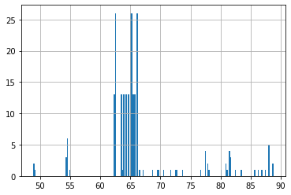

The International Classification of Disease System (ICD)
In this article we will look at the history of the International Classification of Diseases (ICD) system, which has been developed collaboratively so that the medical terms and information in death certificates can be grouped together for statistical purposes. In practical examples we will look at how to extract ICD-9 codes from MIMIC III database and visualise them.
2 The International Classification of Disease System (ICD)
The World Health Organization is an agency that works on behalf of 194 member states. The aim of the organization is to promote the best standards in health for all people, regardless social and economic condition. As well as regardless of race, gender, religion and political beliefs. The main principle behind the organization work, is that access to affordable and articulate healthcare is a human right. For this reason, it promotes the fusion of universal health coverage.
There are several determinants that influence human health. This can be biomedical and genetic factors. Health behaviors, socioeconomic factors and environmental factors. The organization recognizes that we need to have common metrics to measure health and wellbeing. And some of those metrics are related to life expectancy, as well as mortality. Other metrics are subjective, and it depends of how well the person feelings. Disability, as well as illness and comorbidity are also measures of health and wellbeing.
The World Health Organisation aims to coordinate action among the member states, in order to intervene and improve health globally. To achieve this, it is required to collect data from patients, and this data will be analyzed from researchers, statisticians and clinicians to estimate indices of health and wellbeing. Technological and machine learning advances can promote healthcare and narrow the gap between rich and poor countries.
In order to collect data that can be compared across different locations and times. We need to have common notations and definitions. For this reason, the World Health Organization maintains a family of international classification schemes. In other words, there is a set of integrated classifications that provide a common language for health information across the world. The International Classification of Diseases, is the international standard diagnostic tool. For epidemiology, health management and clinical purposes.
The International Classification of Diseases, have been designed with the aim to describe various aspects of the health and the health systems in a consistent manner. In this way, it helps the development of reliable statistical systems at local, national and international levels. With the aim of improving status and health care. In practice, this process is used to translate diagnosis of diseases and other health problems from words into an alphanumeric code. The usage of the International Classification of Disease system. Provides a systematic way for storage, retrieval and analysis of the data.
The first type of users exposed in these classifications is in a clinic and it includes physician nurses and health workers. They integrate this information and they used it to support decision making for their patients. The second type of users are in administration and this can be health information managers, policymakers, insurers and national health program managers.
This data are also of paramount importance for population, health and epidemiology as well as research. They allow quantifying disability, diseases and risk factors in a global level. And they enable research in decision support system, based on artificial intelligence.
Summarizing, the International Classification of Diseases is one of the oldest and most important classification in medicine. It enables the optimal application of computer technology in the processing and retrieval of clinical information. Importantly, it is recognized internationally. Which enables sound statistical comparison of data, from different regions in different times.
3 The Evolution of the ICD System
The first effort to systematically classify diseases goes back in the 17th century. John Graunt, who was an epidemiologist and statistician, was looking into the death of children who’re born alive, but died before the age of six. He recognized the need to organize mortality data into some logical form and therefore develop the first statistical study of disease called the London Bills of Mortality.
William Farr is considered as the first medical statistician of the general Register Office of England and Wales. He submitted his report on Nomenclature and Statistical Classification of Diseases in 1855. In this report, he included most of those fatal diseases that affect health. In fact, in mid 80s, it was recognized the need of classification of diseases that was uniform and internationally accepted. Farr pointed out that medicine has progressed by that time and many diseases could affect particular organs, pointing out for a classification of diseases related to the organic systems they affect. He also considered previous classifications as largely symptomatic and the arrangements could not be used for statistical analysis.
The beginning of modern classification can be considered as the 1893. The chief of statistical services of Paris prepared a classification based on the principle of distinguishing between general diseases and those localized to a particular organ or anatomical site. Bertillon presented his report on causes of death and incapacity for work, including hospital admissions. Bertillon’s main headings included general diseases, diseases of nervous systems and sense organs, circulatory system, respiratory system, digestive system, and many others. The International Statistical Institute adapted the first edition of international classification system, the so-called the Internationally List of Causes of Death in 1893.
The ICD-10 coding system was endorsed by the 43rd World Health Assembly in May 1990. It came into use in World Health Organization member states as from 1994. ICD-10 involved a thorough rethinking of its structure and an effort to devise a stable and flexible classification which won’t require fundamental changes. Also, the structure of codes have changed from numeric to alphanumeric, which allows for significant expansion. The ICD-11 coding has been adopted by the 72nd World Health Assembly in 2019, and it comes into effect in January 2022. ICD-11 has been designed for digital use and it’s fully electronic. It aims to assist implementation and reduce error in diagnosis while it makes it more adaptable in local countries. The system has an improved ability to code for the quality and safety of health care and highlights socioeconomic factors that directly and indirectly contribute to people’s health. Finally, it also tries to simplify diagnostic descriptions, particularly in relation to mental health.
Summarizing, the need to organize disease data systematically was recognized in the 17th century. However, it wasn’t until the late 80s where the first international list of causes of death was founded. ICD codes are ubiquitously used in medicine and they are necessary to be able to compare statistics across different countries and across different times.
4 ICD-9 and MIMIC-III
ICD-9 is the disease classification system used in MIMIC-III. We will review its main structure, and we are going to see how the ICD codes can help us extract summary statistics from MIMIC-III database for example, to the number and distribution of patients across age which are diagnosed with a specific disease. We’re going to also see how we’re going to be able to put together queries to extract data with relation to the most common ICD codes in the MIMIC database and how these codes are distributed across ICU units.
The main structure of the ICD-9 coding system consists of three digits that reflect a category and two digits that reflect the cause or the location. The World Health Organization requires a minimum of three-character categories level for international reporting and comparison. Therefore, these three digits always need to be provided with the corresponding number. Whereas the fourth digit is filled with X when there is no further information about the sub-division.
Here, we see a more detailed overview of the ICD-9 categories. In the first column, we see the codes related to the three first digits of the ICD-9 code. On the right column, we see the description of each of these categories. We start here with epidemic diseases and then we see diseases like neoplasm, endocrine, nutritional, and metabolic diseases and immunity disorders. We see here diseases of the blood and blood forming organs, mental disorders, and then we see also a number of diseases related with specific systems, such as the nervous system and sense organs, the circulatory system, the respiratory system, the digestive system, the genitourinary system, and so on.
Subsequently, we see developmental diseases, for example, congenital abnormalities. We also see injury and poisoning category. Finally, we see here that the last two categories, the first digit can be a letter. Both of this category offer a supplemental classification. We’re going to see how we can extract those codes from MIMIC-III. ICD codes in MIMIC-III are under the table of Diagnoses_icd.
5 Extracting ICD-9 related information from MIMIC-III
5.1 1. Number of patients diagnosed with hypertension above 30 years old
We would like to count the number of patients who were diagnosed with hypertension and are at least 30 years old.
First, we need to combine the Admissions and Patients table to obtain the age (from date of birth and admission time), and filter out all patients younger than 30 years old. ICD9 diagnoses can be found in the Diagnoses_icd table (and descriptions of each code can be found in the D_icd_diagnoses table). We select all ICD-9 codes that are starting with 401, as these are related to hypertension.
# Compose SQL queryquery ="""SELECT p.subject_id, d.icd9_code, round((EXTRACT(EPOCH FROM (a.admittime-p.dob))/60/60/24/365.242) :: NUMERIC, 4) as age FROM public.patients p INNER JOIN public.Diagnoses_icd d ON p.subject_id = d.subject_id INNER JOIN public.Admissions a ON p.subject_id = a.subject_id WHERE round((EXTRACT(EPOCH FROM (a.admittime-p.dob))/60/60/24/365.242) :: NUMERIC, 4) > 30 AND icd9_code LIKE '401%'"""# Run queryquery_output = pd.read_sql_query(query,con)query_output.head()
subject_id
icd9_code
age
0
10017
4019
73.6792
1
10019
4019
48.9014
2
10026
4010
300.0020
3
10027
4019
82.4941
4
10033
4019
81.6256
5.2 2. Histogram of the number of patients diagnosed with hypertension
Instead of counting the number of patients diagnosed with hypertension of 30 years and older, we would also like to see the distribution of hypertension diagnoses across different age groups for all ages. Hence, we do not want to filter out any age ranges.
The approach is very similar to the previous query. However, we now do not filter on age, and also select the age for each patient, to be able to create a histogram across different age ranges.
# Compose SQL queryquery ="""SELECT p.subject_id, d.icd9_code, round((EXTRACT(EPOCH FROM (a.admittime-p.dob))/60/60/24/365.242) :: NUMERIC, 4) as age FROM public.patients p INNER JOIN public.Diagnoses_icd d ON p.subject_id = d.subject_id INNER JOIN public.Admissions a ON p.subject_id = a.subject_id WHERE icd9_code LIKE '401%'"""# Run queryquery_output = pd.read_sql_query(query,con)query_output.head()
subject_id
icd9_code
age
0
10017
4019
73.6792
1
10019
4019
48.9014
2
10026
4010
300.0020
3
10027
4019
82.4941
4
10033
4019
81.6256
# Remove outlier age df = query_output[query_output['age'] <300]# Visualize distribution of age:df['age'].hist(bins=200)
<AxesSubplot:>

5.3 3. Most common ICD-9 codes across adults patients
We are interested in the ICD-9 codes sorted by their frequency, and want to select to five ICD-9 codes with the highest frequencies. We are only interested to see these results for adult (age >= 16) patients who have been admitted to the ICU.
First, we combine the Patients and Admissions tables to obtain each patient’s age at time of hospital admission from their date of birth and hospital admission time. We also combine the Icustays tables, to filter out any patients who were not admitted to the ICU. We join the Diagnoses_icd and D_icd_diagnoses tables to get all ICD-9 codes and their descriptions. From the Diagnoses_icd table, we also take into account the priority of each ICD-9 code, as hospital admissions might correspond to multiple ICD-9 codes, but we are only interested in the primary diagnosis.
# Compose SQL queryquery ="""SELECT diag.hadm_id, diag.icd9_code, d_icd.short_titleFROM public.patients pINNER JOIN public.admissions a ON p.subject_id = a.subject_idINNER JOIN public.diagnoses_icd diag ON a.hadm_id = diag.hadm_idINNER JOIN public.d_icd_diagnoses d_icd ON diag.icd9_code = d_icd.icd9_codeINNER JOIN public.icustays i ON a.hadm_id = i.hadm_idWHERE round((EXTRACT(EPOCH FROM (a.admittime-p.dob))/60/60/24/365.242) :: NUMERIC, 4) >= 16AND diag.seq_num = 1"""# Run queryquery_output = pd.read_sql_query(query,con)query_output.head()
hadm_id
icd9_code
short_title
0
142345
99591
Sepsis
1
105331
570
Acute necrosis of liver
2
165520
0389
Septicemia NOS
3
199207
81201
Fx surg nck humerus-clos
4
177759
0389
Septicemia NOS
# Print key statsprint('Top 5 ICD-9 codes and their frequencies')print(query_output.drop_duplicates(['hadm_id'])['icd9_code'].value_counts().head())print(' ')print('Top 5 ICD-9 codes and their frequencies by percentage')print(query_output.drop_duplicates(['hadm_id'])['icd9_code'].value_counts().head() /len(query_output.drop_duplicates(['hadm_id'])['icd9_code']) *100)print(' ')print('Top 5 ICD-9 codes Disease Description')most_frequent_icd9s = np.array(query_output.drop_duplicates(['hadm_id'])['icd9_code'].value_counts().head().index.values)query_output.loc[query_output['icd9_code'].isin(most_frequent_icd9s)].drop_duplicates(['icd9_code']).drop('hadm_id', axis=1)
Top 5 ICD-9 codes and their frequencies
0389 15
486 6
51881 6
41071 5
4280 4
Name: icd9_code, dtype: int64
Top 5 ICD-9 codes and their frequencies by percentage
0389 11.627907
486 4.651163
51881 4.651163
41071 3.875969
4280 3.100775
Name: icd9_code, dtype: float64
Top 5 ICD-9 codes Disease Description
icd9_code
short_title
2
0389
Septicemia NOS
6
4280
CHF NOS
14
41071
Subendo infarct, initial
15
51881
Acute respiratry failure
28
486
Pneumonia, organism NOS
5.4 4. Distribution of ICD-9 codes across care units
Instead of looking at the ICD-9 codes themselves, we will now take a look at the ICD-9 categories. ICD-9 codes can be grouped into nine larger categories (or ten if we have an ‘other’ category).
(001-139): Infectious and parasitic diseases, i.e., septicemia, other infectious and parasitic diseases, etc.
(139-239): Neoplasms of digestive organs and intrathoracic organs, etc.
(240-279): Endocrine, nutritional, metabolic, and immunity.
(390-459): Diseases of the circulatory system, i.e., ischemic heart diseases, diseases of pulmonary circulation, dysrhythmias, heart failure, cerebrovascular diseases, etc.
(460-519): Pulmonary diseases, i.e., pneumonia and influenza, chronic obstructive pulmonary disease, etc.
(520-579): Diseases of the digestive system.
(580-629): Diseases of the genitourinary system, i.e., nephritis, nephrotic syndrome, nephrosis, and other diseases of the genitourinary system.
(800-959): Trauma.
(960-979): Poisoning by drugs and biological substances.
ICD-codes can start with an m, v or e. These are supplementary classifications that we can classify under ‘Other’. We would like to have the distribution of these ICD-9 categories for all adult (age >= 16) patients across different intensive care units (ICUs).
We need almost the same columns from all tables as for the previous query. However, we now also need the care unit that a patient was admitted to, from the Icustays table, and we need to extract the different ICD-9 categories from the ICD-9 codes.
# Compose SQL queryquery ="""SELECT a.hadm_id, i.first_careunit, diag.icd9_code, CASE WHEN (lower(LEFT(diag.icd9_code, 1)) = 'e') OR (lower(LEFT(diag.icd9_code, 1)) = 'v') OR (lower(LEFT(diag.icd9_code, 1)) = 'm') THEN 9 WHEN CAST(LEFT(diag.icd9_code, 3) AS int) >= 0 AND CAST(LEFT(diag.icd9_code, 3) AS int) <= 139 THEN 0 WHEN CAST(LEFT(diag.icd9_code, 3) AS int) >= 140 AND CAST(LEFT(diag.icd9_code, 3) AS int) <= 239 THEN 1 WHEN CAST(LEFT(diag.icd9_code, 3) AS int) >= 240 AND CAST(LEFT(diag.icd9_code, 3) AS int) <= 279 THEN 2 WHEN CAST(LEFT(diag.icd9_code, 3) AS int) >= 390 AND CAST(LEFT(diag.icd9_code, 3) AS int) <= 459 THEN 3 WHEN CAST(LEFT(diag.icd9_code, 3) AS int) >= 460 AND CAST(LEFT(diag.icd9_code, 3) AS int) <= 519 THEN 4 WHEN CAST(LEFT(diag.icd9_code, 3) AS int) >= 520 AND CAST(LEFT(diag.icd9_code, 3) AS int) <= 579 THEN 5 WHEN CAST(LEFT(diag.icd9_code, 3) AS int) >= 580 AND CAST(LEFT(diag.icd9_code, 3) AS int) <= 629 THEN 6 WHEN CAST(LEFT(diag.icd9_code, 3) AS int) >= 800 AND CAST(LEFT(diag.icd9_code, 3) AS int) <= 959 THEN 7 WHEN CAST(LEFT(diag.icd9_code, 3) AS int) >= 960 AND CAST(LEFT(diag.icd9_code, 3) AS int) <= 989 THEN 8 ELSE 9 END AS icd9_categoryFROM public.admissions aINNER JOIN public.icustays i ON a.hadm_id = i.hadm_idINNER JOIN public.patients p ON p.subject_id = a.subject_idINNER JOIN public.diagnoses_icd diag ON a.hadm_id = diag.hadm_idINNER JOIN public.d_icd_diagnoses d_icd ON diag.icd9_code = d_icd.icd9_codeWHERE round((EXTRACT(EPOCH FROM (a.admittime-p.dob))/60/60/24/365.242) :: NUMERIC, 4) >= 16AND diag.seq_num = 1"""# Run queryquery_output = pd.read_sql_query(query,con)query_output.head()
hadm_id
first_careunit
icd9_code
icd9_category
0
142345
MICU
99591
9
1
105331
MICU
570
5
2
165520
MICU
0389
0
3
199207
CCU
81201
7
4
177759
MICU
0389
0
# Define function for icd-9 categories per icudef icu_icd9_categories(df):# Replace category codes with names categories_dict = {0: 'Infectious and parasitic diseases',1: 'Neoplasms of digestive organs and intrathoracic organs, etc',2: 'Endocrine, nutritional, metabolic, and immunity',3: 'Diseases of the circulatory system',4: 'Pulmonary diseases',5: 'Diseases of the digestive system',6: 'Diseases of the genitourinary system',7: 'Trauma',8: 'Poisoning by drugs and biological substances',9: 'Other'} df['icd9_category'] = df['icd9_category'].map(categories_dict) # Get list of ICUs icu_list = df['first_careunit'].unique()# Plot pie chart for each ICU fig = plt.figure(figsize=(40,50)) subplot =1for icu in icu_list: icu_df = df[df['first_careunit'] == icu] icu_df = icu_df.drop_duplicates() pie_df = pd.DataFrame(icu_df['icd9_category'].value_counts() / icu_df.shape[0] *100) pie_df = pie_df.reset_index() plt.subplot(5, 1, subplot) plt.pie(pie_df['icd9_category'], labels=pie_df['index'], autopct='%1.1f%%') plt.title('Disease categories for '+ icu) subplot +=1# Print key statsicu_icd9_categories(query_output)